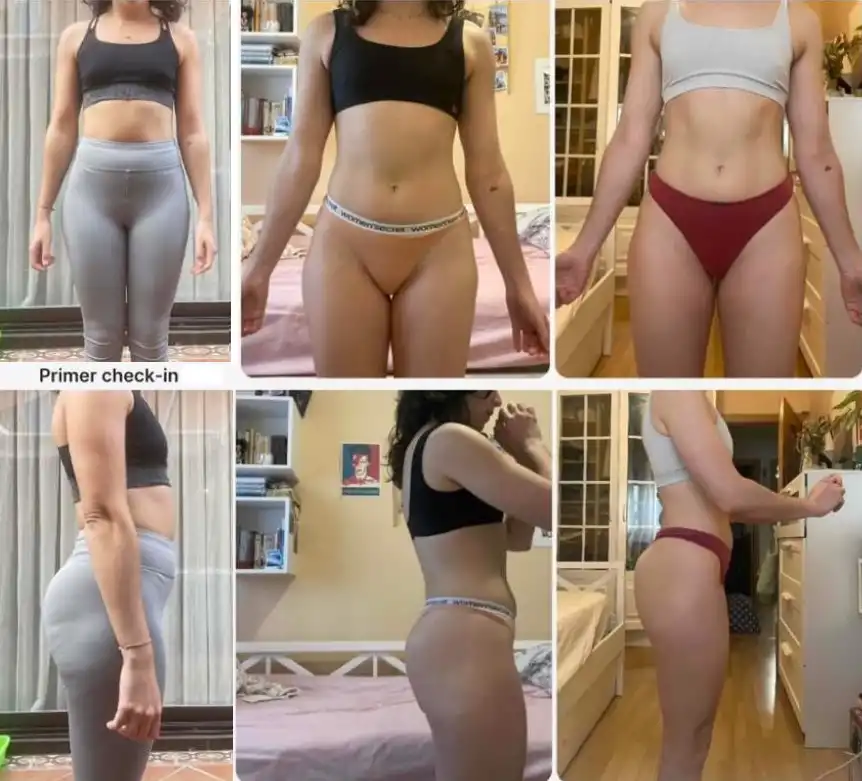
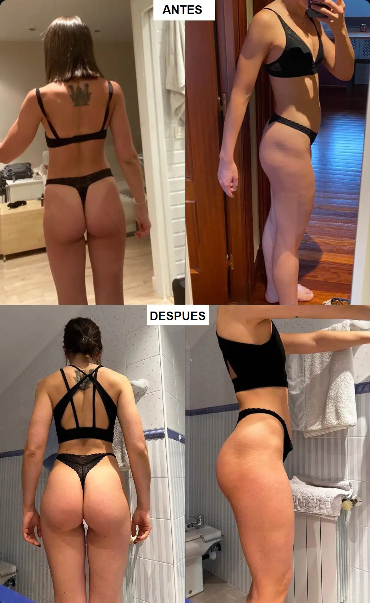
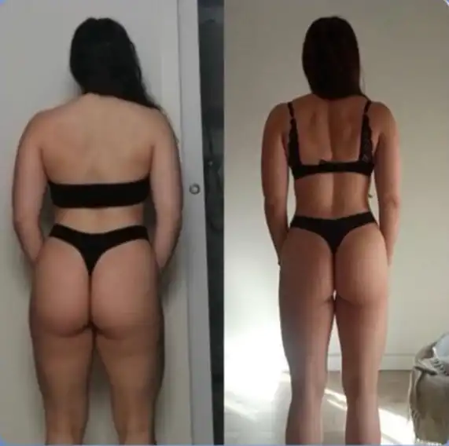
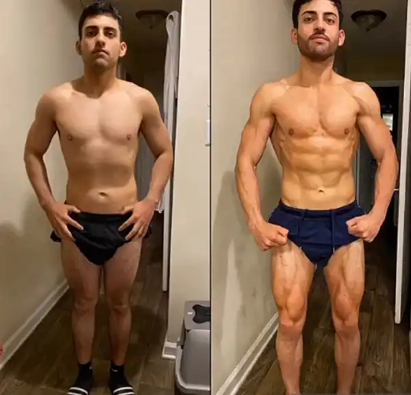
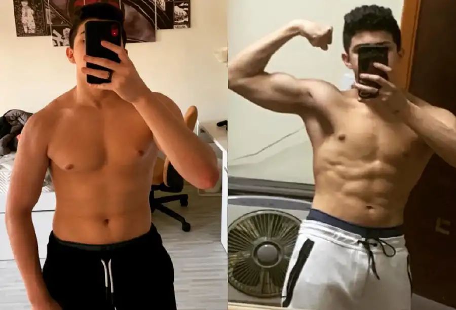
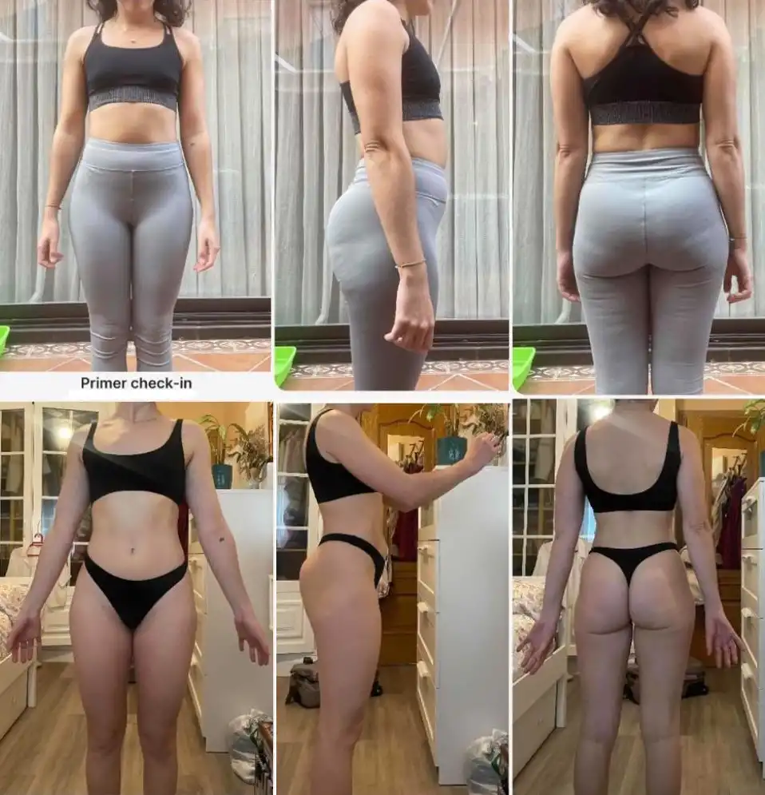
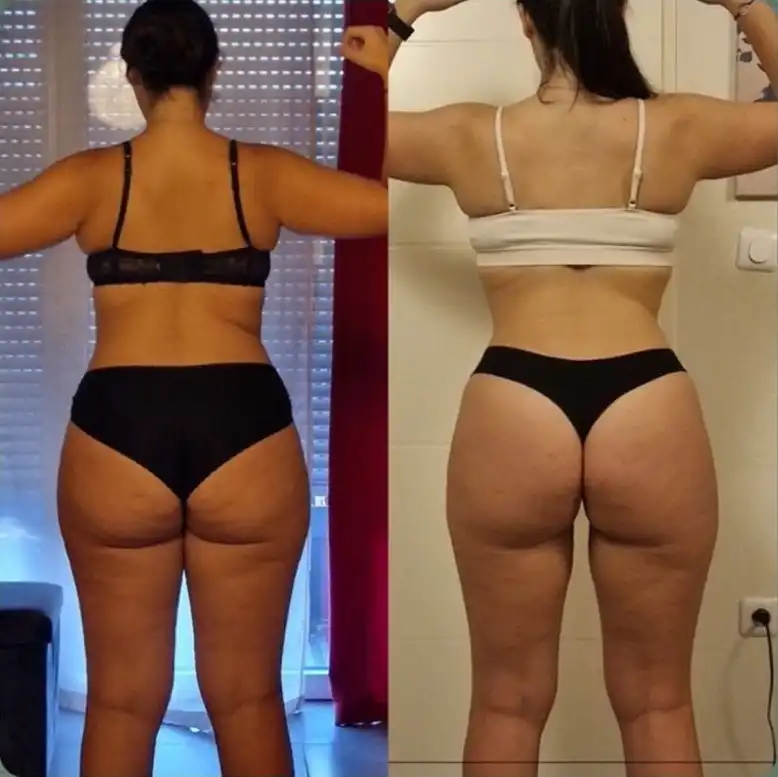
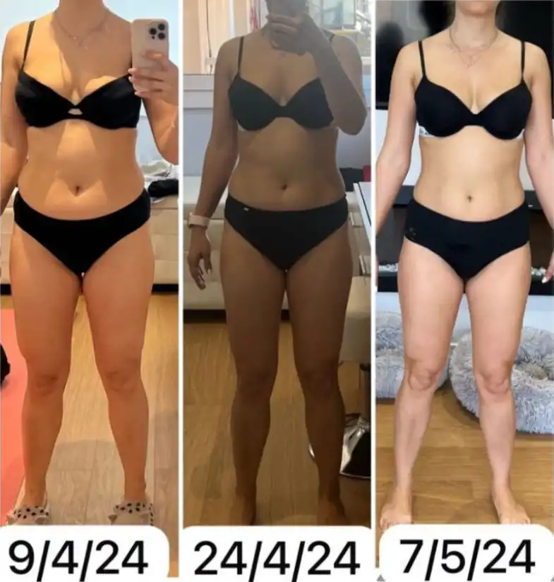
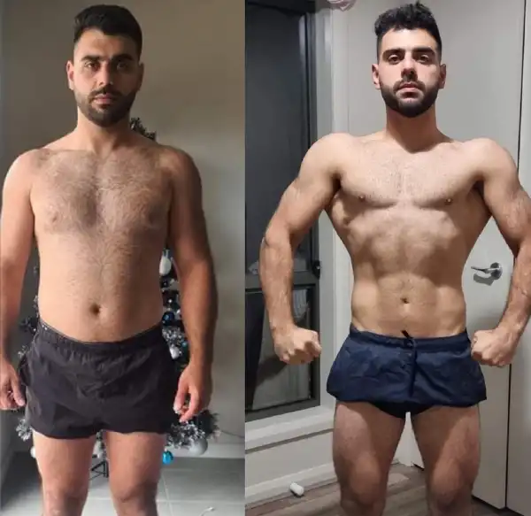
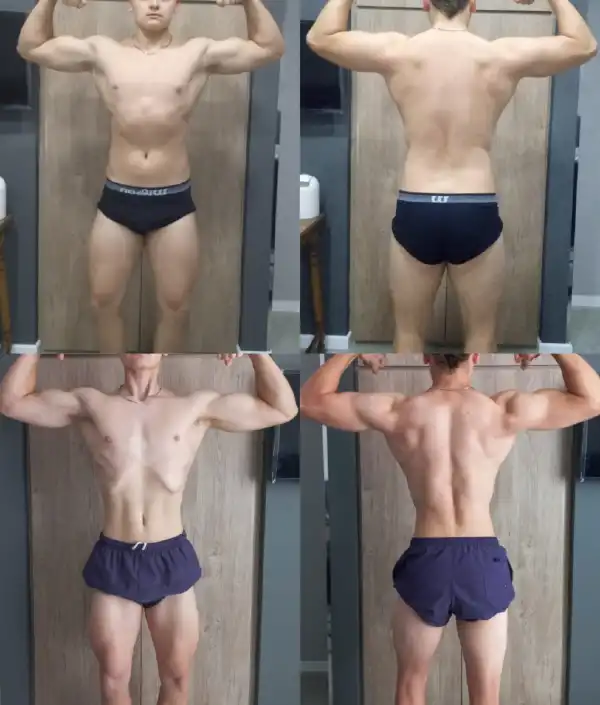

• Puedo decir que hasta este momento de mi vida he logrado encontrar un EQUILIBRIO entre el entrenamiento y la alimentación que permite llevar mi día a día y sobre todo, mantener hábitos que me hacen sentir bien, es por eso que mi objetivo hoy, es ayudar a otros/as a que puedan encontrar este equilibrio.
Para cualquier tipo de objetivos, aumento de masa muscular, perdida de peso o mantenimiento; que este mismo puedas mantenerlo de POR VIDA.
ELLOS YA TOMARON ACCIÓN
SUS RESULTADOS:










¿PARA QUIÉN ES ESTO?
SI SIENTES QUE:
No tienes tiempo
Tu ajustada agenda siempre fue un obstáculo para cumplir de manera
efectiva con cualquier tipo de entrenamiento y alimentación.
Estás desmotivado
El mirarte cada día al espejo, notar que esa ropa que te gustaba
ya no te queda igual, incluso sentir que tu salud se va
deteriorando aumenta la disconformidad con tu cuerpo.
Ya que al no ver resultados te cuesta progresar y sientes que
estás siempre en el mismo lugar.
EL PROBLEMA ES QUE NO ESTAS IMPLEMENTANDO
EL MÉTODO BALANCE
No hace falta que hagas dietas estrictas donde pases hambre,
interminables horas sufridas de ejercicio o usar productos y
suplementos que no sirven para nada.
Lo que debes hacer es aplicar el conocimiento correcto para que tu
cuerpo avance hacia donde vos quieras.
ESTO ES LO QUE VAS A LOGRAR CON EL MÉTODO BALANCE
Únete a mi programa y recibirás la orientación necesaria para transformar tu cuerpo y mejorar tu apariencia. Esto elevará tu autoestima y te hará sentir mejor que nunca. Experimentarás un cambio de mentalidad y verás un progreso real, dejando atrás la frustración de no obtener resultados. Vas a disfrutar la satisfacción de lucir el cuerpo que siempre deseaste.
Un programa de entrenamiento, nutrición y seguimiento online a nivel profesional, exclusivo para sexo femenino, mujeres decididas y comprometidas que buscan cambiar su cuerpo.
•
Más de 5 años de experiencia como entrenadora online.
El enfoque personalizado me inspiró a comprometerme más con mi programa de entrenamiento y nutrición. El conocimiento y habilidad de adaptar el plan a mis necesidades y tiempo individual han sido fundamentales para mi progreso físico.
Lo que más me impresionó fue cómo pudiste diseñar un programa de entrenamiento que se adaptara perfectamente a mi estilo de vida ocupado. Con tu ayuda, aprendí a maximizar mis sesiones de ejercicio para obtener resultados grandes en menos días a la semana. Esto ha sido un cambio de mentalidad para mí, ya que ahora tengo más tiempo para dedicarme a otras áreas de mi vida sin sacrificar mis objetivos físicos.
Lo mejor del asesoramiento fue aprender a romper mitos y creencias del fitness. Pude entender que no necesitaba esclavizarme en el gym para mejorar físicamente. La dieta me encantó adaptarla a mis horarios del día y que sean opciones muy simples de preparar.
Se puede esperar un resultado notable y eficiente siempre y cuando
te comprometas a cumplir con el programa y todas las indicaciones
que te voy a recomendar de forma personalizada para tu estado
actual y el objetivo que tenemos que lograr, dentro del plazo de
los 90 días.
¿Puedo contratar la nutrición y el entrenamiento por
separado?
No, el plan es completo y se realiza de forma integral.
¿Puedo unirme si no tengo elementos para entrenar?
Si, el programa se adapta a cualquier situación, incluso si no
tienes elementos. Sin embargo, con el paso de los primeros niveles
de las rutinas, el tener elementos como mancuernas, barras de
dominadas, etc., facilita mucho a la realización y progresión de
las rutinas para mejorar tu físico al máximo.